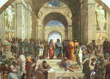
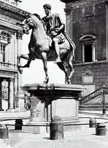

|
|
我一生有一个很大的责任，就是借着护教功能来对那些信仰上遇到困难的人讲解为什么我们要信？所以如果你有这样的一个心志，把护教功能和布道的目的配合起来的话，你为你的朋友祷告，把他们带到主的面前来，如果必要，替他们出钱，明天请他们一同来。如果没有钱，告诉我，我替你出。
|
我一生有一个很大的责任，就是借着护教功能来对那些信仰上遇到困难的人讲解为什么我们要信？所以如果你有这样的一个心志，把护教功能和布道的目的配合起来的话，你为你的朋友祷告，把他们带到主的面前来，如果必要，替他们出钱，明天请他们一同来。如果没有钱，告诉我，我替你出。
我很不愿意我们的机会过去了，只有我们的经费足够，那不是我们最大的目的，我们最大的目的是在这个时代怎样把人思想里面不属于神的堡垒攻破，把神所造的理性带回创造理性的神真理的面前，那是我们的目的（参：哥林多后书：10 章 4-5
节）。所以我们不要放松我们的目的，我们要继续不断的在神面前求主给我们智能，给我们能力做我们要做的事。
有许许多多模模糊糊的基督徒站在以为自己大有信仰勇敢做工，还有许多糊哩胡涂信仰的基督徒竟然站在好象很有权威的地步发言带领许多的人。而今天你看见有理性功能，而把理性与信仰带到合一的地步，能负责任，能尽理性的交待把信仰传讲出来的人，竟然在这个世界没有发挥有大的雄心的做用。相反的，有许多许多理性方面没有好好顺服真理的人好象正在如火如荼做一些所谓「上帝的工作」，这是很可怜的事情。我盼望我们这个世纪还没有结束以前，整个基督教有一个正确的方向和稳重的根基可以建立起来。我盼望你们还没有变成中年以前你们已经奠定了你整个人生的方向。如果一个人整个的方向已经没有真正的基础和原则的话，他一切的成就都没有用。
每遇见做属灵工作的时候我要先问一个问题
--
动机是什么？我们的动机里面要达到的目的又是什么？我们行事的原则是什么？那么这样，有时好象慢了一些，但是在神的旨意和神永恒的计划里面，这是绝对不会失败的，求主帮助我们。
新加坡的青年，特别是基督徒应当奠定一些很重要的思想原则--
我这一生要做什么？我是有理性的人，
我相信宇宙之间有真理吗？宇宙之间如果有真理，我的理性和真理之间的关系是什么？如果有真理的话，我为真理而活到什么地步？如果有真理的话，我今天的基督教信仰，我的基督徒生活到底是站在真理一边或者是不是站在真理的一边？今天整个的西方社会已经以「赚钱」和「经济基础」为他整个生活动态和整个社会思想形态的一个最重要的内容。基督教不是如此，我们的主没有教导这样的事。
|
所以你们在很年青的时候应该奠定一个重要的思想原则
--
我这一生与真理之间的关系是什么？我要为真理做些什么？我要与人一同分享的真理是根据什么？若是这个没有定，不必事奉上帝。如果这个没有定，也不必称自己是基督徒。因为基督徒乃是要与真理联合在一起为真理做见证的那些人，叫做基督徒。
|
|
你只能做基督教「教徒」，礼拜堂「堂徒」，某某会的「会徒」（不要笑，我丝毫没有意思和你们谈笑话在这严肃的地步里面），你只能做一个糊哩胡涂的人。
这一次你们的海报所用的这一张图画，我不知道谁知道这张图原先是谁画的，你们知道吗？谁知道的请举手？这张图里面有两个人，一个比较老的，一个比较壮的，在一个大门框的下面，而前后一大堆的人，有的蹲在地上，有的围在旁边，有的正在自己思考。这张图有哪一个参加这次聚会的人知道是谁画的吗？这张原先的图画是谁画的？有谁知道，请举手？一个都没有？那我就不知道你们这个时代知识分子到底所要想的是什么了？
这张图是文艺复兴高派最后一个伟大的艺术家画的，
这个 High Renaissance
的最后一个图画家的最大的，以后还有一些没有这么大，三个高派的，后期的意大利文艺复兴最伟大的画家最后三个是达文西
(Leonardo da Vinci, 1452-1519)、米开朗基(Michelangelo,1475-1564)
和拉斐尔 (Raphael, 1483-1520)，而这一张是拉斐尔画的。我先把这一张图画稍微解释一下，本来这张图画做为海报，我是不知道的，我今天才看到。但我认为这个有启发性，也愿意和大家分享一下。
|
|
拉斐尔是跟米开朗基罗同时期的，而米开朗基罗又是跟达文西同时期。达文西到现在可能被认为是在历史上曾经活过的最大的天才之一。达文西的图画以「神秘的微笑」和很深奥的智能做他图画的特色，所以是「智」的代表。与他同时的另外一个大的天才叫做米开朗基罗，他的图画里面有勇敢、刚毅、绝对不妥协、人性所有角度的美和力量的表现，那个伟大的精神就从「勇」这个字去表达。米开朗基罗同时代达文西以后，另外一个很年青的人，与他同样在一个地方工作，而这个老人，对这个年青的人竟然有这么大的才干，这么被器重，产生一种莫明的怨恨和埋怨嫉妒在里面。
|
所以他一面工作一面对这个年青的有莫明的怨恨和妒忌，虽然他自己的才华一点不在那年青人的下下面。而这个拉斐尔他所表达是人性的仁慈、慈悲、美丽、温柔，所以以「仁」代表。所以文艺复兴后派高派的三大图画家可以用「智、仁、勇」三个字来表达。那么在所有拉斐尔所有作品中间，我认为最有雄厚气魄，有伟大的气慨的，就是这张图。而这张图原先是比你们注销来的更宽大概两倍，但是你们把旁边的右和左都割掉了，所以你们不是「右派」也不是「左派」，你们是「中立派」的。
我要先解释这张图画，这张图中间只有两个人，而旁边好多人。这两个人一个是柏拉图，另外一个是亚里斯多德。那位年老的是代表柏拉图，那位年青的是代表亚里斯多德，你现在拿出来吧，有吗？没有。但你看过这张图了？在报名的时候看到了，我现在放在这里，你以后看的小得不得了了，我也没有办法放在这个地方给你看到，因为不是透明的，我把一个素描画出来好了。在这个很大的殿堂的里面，本来这里还有两座雕刻，这两座雕刻都是很美的人体，裸体的雕刻被放在这里。这里有两个人，一个是年老的正看着那年青的，他手指着天上。这边一个年青人，他在这边手指着下面。这下面这边有一些人，那边还有一些人。这个年老的是柏拉图，他手中拿着一本书，名字是《泰米亚斯》 (Timaeus)，《泰米亚斯》原是柏拉图所写的很多书里面的很重要的一本书，这本书就是他的
Cosmology，叫做「宇宙论」，宇宙的来源是怎样的？宇宙之间的关系是怎么样的？形上、形下之间的关系是怎么样的？这个是「宇宙论」。这亚里斯多德拿在他左手的书叫做
Ethiscs
就是《伦理学》。所以一个是柏拉图，他所讲的，他整个讲论的中心是整个宇宙的问题。而柏拉图所谈的宇宙论是「唯心」的，
所以柏拉图在哲学历史中被称为「唯心论之父」 (The father of
idealism)。Idea 这个字，我们中文翻译成「心」、「心意」、
「观念」、「意念」、「看法」、「见解」， What is your idea?
「你的见解如何？」「你有什么样的计划？」「你有什么样的意念？」
Idea。我个人对哲学历史里面中文的翻译每一个关于 Idea
的表达的字我认为都不够，所以我自己在哲学词典找不到满意的词句，我给
Idea
一个很特别的名称的翻译，这个翻译你们满意不满意你们也有自己的
Idea 就是了。我把 Idea 不翻译成「意念」、「观念」...
等等，我把它翻译成「思观」，在思想里面的那个观念，所以是「思观」。所以
Idealism
如果翻译成「唯心主义」那是比较不是照字意来翻译的。那「思观主义」，或者你说「理想主义」
Ideal，Where is your ideal project?
你的整个理想的计划到底是什么？
那 Ideal 是理想，所以有人把
Idealism 翻译成「理想主义」，
但我认为这个好象又离开哲学思想太远了。所以我用「思观」；「思观」可以代表「意念」、「观念」，而
Idealism
就用「思观主义」就是了。他（柏拉图）是第一个认为宇宙的一切不是在物质界里面可以找到答案的。所以如果你在物质里面盼望找到答案，你一定是失望的。而一切的一切的原委不在看得见的世界，而在看不见的世界。所以他这张图画，画图的人不是随便拿起笔来画画人体结构，涂上一些颜色卖钱就算了。这个画的人是实实在在真正明白那个整个西方古代哲学的思想家所要寻找的是什么。所以一个伟大的图画简直就是一个哲学的写照。我相信新加坡人是不大注意这方面，所以你们是一个很现代化，很着重科技和商业发展的国家，但是你们在文、哲、史这方面的人才是很缺乏的，香港也是很糟糕的。所以这一代的青年人需多一些更深入一层的思想，否则的话我们表面做一个有钱的人生活很富足，什么都不懂的人是很可怜的。
在西方的历史中间为什么民主和自由是那么样的勇敢？为什么西方的民主和自由有那么大的力量？在东方没办法。当年青人对邓小平说 Give us democracy or give us death! 邓小平说： Ok, give you death.
所以东方这个没办法，
而西方那个勇敢民主从哪里来？就从这个人（亚里斯多德）对这个人（柏拉图）的态度来的。我们无论如何总是老师对，总是年纪大一定对，无论如何不能和他辩。但是西方不是的，这是所有学生里面唯一和老师辩得体无完肤的。所以他的老师没有办法，
结果他的老师不得不承认， 我的学院 (Academe)里面所有的学生这么多，他说「我整个学院只有两件事情构成的，第一就是所有学生的身体，第二就是亚里斯多德的头脑。」换句话说，柏拉图承认整个学院里面只有一个脑，其它的只有脑袋、空袋、有袋无脑，而整个学院里面有这么多的人只有一个脑，就是敢和他辩论，敢反对他的这个脑。他当然也不大舒服，但是内心之中真正敬佩的只有这个人。
我今天不是说要称赞这个或是称赞那个，因为这两个都不是基督徒，而柏拉图和亚里斯多德都在基督以前四世纪的人。所以耶稣基督到世界上来的时候他们已经死了三、四百年了，所以这是很早的事情，大概是孟子的时代，但是孟子的时代比苏格拉底迟一点，苏格拉底六十八岁死的时候，柏拉图只有二十八岁。他不是说读书四年拿了学位快快走，他一生一世跟着他的老师，跟到他老师被人弄死了以后他才不得不走。我想如果苏格拉底不走，他就跟苏格拉底学到「底」，他就不走了，因为当时的人对真理的爱好是到这样的一个地步。他不是单单为了学位，为了一时的名气快快学就完了，不是的，乃是一生一世追求，钻研，了解，要探索，要明白，要持守什么叫做真理的。
为了真理的缘故也不惜需要的时候争起来，辩论起来很强烈的把自己的意见表彰出来，西方的文化受这几个人的影响是很大的。
有一个人说「柏拉图、亚里斯多德和苏格拉底在这三个头脑里面所想过的，所闪过的东西可能是全世界的人想过也没有超过的。」凡是人想过的问题都曾经在这三个人的脑子里面闪过了，你可以想象是这么大这么大的人物。而亚里斯多德一个人写的书超过一千本，包括了天文学直到动物生态学。 From heavens 一直到 On the move of animals。
连猫走动的时候她的腿筋怎么动他都记载下来了。解剖学、生理学、我们的血液怎么样循环，他的猜测他都写书了，所以他写了一千多本书，这些人的头脑是大得不得了的。但是请你注意这张图画里面，如果以后有机会你再注意，
这个题目叫做「雅典学派」(The School of Athens)，这张图画的名字叫做「雅典学派」。雅典学派也就是描写古希腊运用理性思考和探讨真理到最高峰的那一个学派的描写。
|
在这个所有的里面，你注意，他画图画到一个艺术和哲学配合到这么深的地步，所有的人都在大房子里面。只有这两个人虽然在大房子里面，他们脑的背后是蓝色的天空，什么意思呢？只有他们的思想是冲出限制的(Break
through the limit)，明白我的意思吗？所以你一看这个图的时候，你就看见只有两个脑袋背后是天空，无限的，其它人的脑袋都在房子里面是有限的。
|

|
所以以后你们买图画不买「哇！黄色、红色配得很好。」就买了，人家好的图画里面有无限的思想在里面，你懂吗？
那这两个头脑是 Universal，那为什么苏格拉底这个时间不被画在这里呢？苏格拉底影响这两个人，而历史上人了解苏格拉底根本是透过柏拉图，因为苏格拉底自己没有写书，所以只有在柏拉图的书里面你才看见苏格拉底曾经怎么教，曾经怎么想，曾经怎么说。有许多伟大的圣人「述而不着」，自己没有著作，只有述说，只有讲，有人把它写下来。当然，这个世界有两种人，如果你能够在两种中间做一种也不错了。第一种就是你讲道人家不得不写下来的。第二、你写到人家不得不拿出来讲的，两种都可以。但如果你自己讲没有人要写，自己写没有人要讲两个都失败了，但是今天有很多人就是那种人。
好，我们继续再讲下去了。这个什么叫做
Universal
呢？就是说他们相信有「普遍性的真理」。我要从这里提到今天的题目了，「普遍性的真理」。中国人明白「真理」的普遍性是很难得到共同的追认的。所以许多许多认为的「真理」是另外许多许多人认为「非真理」的。在共产主义被认为是对的事情，在西方被认为是不对的，而在西方被认为是天公地道的事情，在共产主义被认为是很有毒素的思想刺激。所以什么叫做「真理」呢？这就变成一个非常相对性的一个名词。但是，无论东方，无论西方都相信有真理的存在。所以，东方不信西方的真理是因为东方认为真理在东方，西方所以不相信东方的真理，因为西方认为真理在西方。而无论在何方，大家都相信真理是存在的。如果真理是存在的，只在这里不在那里，那么真理就变成有局限的
The limit truth is not truth. 有局限的真理是「真理」吗？
如果真理在我这里不在你那里，这样的真理可以叫做「真理」吗？相反的，如果真理在你那里不在我这里，那样的真理可以叫做「真理」吗？你说，真的GC党党相信真理吗？希特勒相信真理吗？希特勒为什么奋斗？为他所认为的真理奋斗，他的那本《我的奋斗》那本书平均每一个字使世界上死了几千个人。所以全本书使世界上死了几千万人，就是因为他那本书，因为他一想「奋斗」就把别人「斗」掉了，那叫做「奋斗」，所以他为他所认为的真理奋斗……到了一九六二年的时候莫斯科电台宣布，因为当时中国和苏联的关系已经搞翻了，两个电台彼此宣布对方一共杀了多少人。北京宣布在斯大林手下一共死了两千多万人，而莫斯科宣布在毛泽东手下死了三千五百多万人，而文化大革命而死的人比那三千多万还更多，所以至少有七千多万人死于非命。
|
|
某人说：「我们怎么可以把用两千万人命换来的政权付诸东流呢？」所以他说：「为了保持我们继续的存在，不惜就是杀死一万人也不管。」那这样的话语就证明，他们自己的头子证实了他们是用杀死人民来换取强硬的政权来产生这个独裁的力量的。
|
这些就表示，你说你有真理在我来说，我不信；我说我有真理在你来说你也不信，所以用中国最简单的名词来表达这个相对性的东西，就是很简单到每一个人都懂的叫做「公说公有理，婆说婆有理」。但是「理」是「公」的吗？如果理是「公」的「婆」不认，或者理是「婆」的「公」不认，「公理」、「婆理」都不是理的话，有没有「公婆合理」的呢？如果有一些理是公要承认，婆也要承认的话，那么那种理是什么理？那种是叫 Universal，这个叫做「共相」，
在中文的哲学名词翻译叫「共相」，或是「共同所能接受的真理的那个本相」。那这个共相就是普遍性的真理
The Universal Truth
正是苏格拉底、柏拉图、亚里斯多德所相信的。这张图的背后是蓝色的天空，表示突破了限制；突破了有形的建筑、有形的民族、有形的物质界的限制到了无限的地步。如果真理是存在的话，那我问你，你凭什么知道真理存在？如果真理是存在的话，
请问你用什么话来解说真理？How can you know that is truth? How could
you define what is truth?
今天如果我请你们现在用两分钟的时间你们谈谈，
几个人交头接耳谈，谈完了以后把你们认为的「真理」的定义先告诉我一下，那我们再接下去的时间我们就会发现许许多多的人都有不同的定义。
为了表示这句话是对的，我们现在马上实行，现在你们自己先谈一下，几个人谈一下，几个人一组随便你，我们给你一分钟半的时间，完了以后我就要请你们中间无论哪一个人要站起来把你们那一组讨论的「真理」的定义你讲出来，给你们自由，另外有半分钟的时间你们有谁要讲的，现在讲，现在谈。什么叫做「真理」？你信有真理吗？你怎么知道有真理？真理是什么？不讲话的我特别请他站起来演讲一下。现在你们快快谈，有没有真理？你怎么知道有真理？真理是什么？
好了，时间到了。如果一分钟里面就讨论出真理来，那是很有真理的。好，有哪一个人要表示那一组的意见，要表达你们的定义的？谁都可以站起来。「真理是什么？」有没有？请站起来讲，把你们的定义和意见讲出来。
答：真理是永远不会改变的道理，例如一加一等于二，昨天是一样，今天也是一样。
真理是「永远不改变的道理」？请你再解释什么叫「道理」？好，还有没有？没有了？刚才谈些什么？还有哪一个人，快点，不要怕，最多讲错了。讲，你们有没有讨论？讲嘛！你们现在讲嘛！
答：真理是真实的道理，客观事物在人的意识中的正确反应。
请再慢一点讲，大声一点，站起来讲。
哪一本字典哪？是莫斯科出的或者美国出的？「真实的道理」，什么叫「道理」啊？什么东西的反应？「事物的反应」？人反应它或者它在我们里面的反应？还有什么？
好，我们现在要请大家来看一些圣经，以弗所书第四章第二十四节，翻到一同来读：「并且穿上新人；这新人是照着上帝的形像造的，有真理的仁义，和圣洁。」
人，一个新的人是有神的形像的，这个「形像」是什么样的形像呢？是有真理的仁义和圣洁。在这一段的圣经里面我们看见了三个名词并列在这里。而这三个名词之中有一个就是我们刚刚所讲的，有「真理」的仁义和圣洁。
真理的仁义和什么？----
圣洁。在这里我们看见，前面的这个本性成为后面两件事情的基本本性。所以，真「义」、真「洁」。「洁」是建立在真实的本质上，「义」也是建立在真实的本质上面。这样，人之所以为人，因为人是照着上帝的形像造的。这样，人像上帝是从什么地方看的？人像上帝就从人有这三个本性来看的。这样，神的形像你就不难了解了，在全本圣经里面多处提到「人是照着上帝的形像造的」，或者说「人像上帝」，但是「像上帝」是怎么样去了解它呢？其它的圣经在旧约里面没有提，新约别处也没有提，唯一提到形像的解释的，就是以弗所书四章二十四节。所以从归正宗，或者改革宗神学很严谨的把它演译出来的话，我们看见这里有三大本性。
第一个本性就是「真理」在人的心中，表示人是有理性的。「仁义」在人的生命里面，表示人是有法性的。「圣洁」在人的生命中间表示人是有德性的。这样，你看见了「人之所以为人」，与所有动物不同的地方有这三个基本的本性使人有资格被称为「神的形像」。「人之所以为人」，在这三个本性里面，给我们看出「人可以做上帝的代表」。
「人之所以为人」， 因为人是有理性的活物， rational
being, nature of reasoning。
|
第二样，人之所以为人，因为人有「法性」的功能，nature
of law
这就是人能够思想公义、不义、法律、制裁、审判、批判....这些功能的基础。人之所以为人，因为人有「德性」的功能，
the nature of morality
所以人与动物就不一样。人之为人与动物之间的不同，有许多的思想家曾经做一些很重要的探讨，但是没有一个人曾经超越过圣经所提示出来的这三大本质。
|
|
人是有理性的活物，人是有法性的活物，人是有德性的活物。在我们还没有考虑到什么是真理？怎么界定真理以前，我们来思想人与动物之间的分别在什么地方？
我们刚才思想的许多许多的思想家，无论是东方，无论是西方，曾经在这个大的题目下做一个很严谨，也是非常深入的探讨。那么我们先思想到在这个古代人文主义之父的思想，这个人叫做普罗达哥拉斯(Protagoras 484-411 BC)，
普罗达哥拉斯是第一个把人的重要性提出来的人，可能他提得太过份了，但是至少他发现了人与万物是不一样的。把「人」与「物」等量齐观的人一定缺乏人性，或者缺乏对人性的了解。人绝对不是物，物绝对不是人；人有物的成份而超越物，物组成人的成份，但却不是人。人之所以是人，因为人有「超物」的这个成份在里面。
那么， 普罗达哥拉斯被称为「人文主义之父」(The Father of
Ancient Humanism)，这个「人文主义之父」重要的有两个人，
第一个就是普罗达哥拉斯， 另外一个人叫做格而齐亚(Gorgias
483-375 BC)。普罗达哥拉斯对人的定义是什么呢？他用一句的希腊文文来表达出来，这句叫做
HOMO MENSULA，HOMO 就是 man；MENSULA 就是 measure，整句话的表达就是
Man is the measure of all things
人是万物的衡量，人之所以为人，因为人会估价万物，人能衡量万物。
我们有时候对小孩子说：「你不懂事，这么重要的事情你都不注意，不重要的一直注意」，为什么？因为他没有价值观衡量的可能。我第一次把我的两个孩子带到加拿大去的时候，我带他去看尼加拉瀑布，我以为他们会很欢喜，你知道他们两个一个五岁，一个两岁，不看瀑布，他们一直看那个望远镜。我说，「望远镜是为了看那个」，他说「不，这个好看，这个很好看！」我说，「那个是世界最大的。」他也不知道什么叫「世界最大的」，就是看这个很好玩，因为那个是跟家里的水龙头有一点一样的，而这个东西是家里没有的，所以他不能衡量哪一个是大，哪一个是不大；哪一个重要，哪一个不重要，这个「衡量」的功能等他长大以后慢慢的了解起来了。但是我告诉你动物看见大的尼加拉瀑布也不会站在那里欣赏一下然后说：「嗯，比我乡村里的那个小瀑布大得多！」连这个衡量都不可能。所以普罗达哥拉斯的思想是对的，
这一方面就是「人是唯一能衡量者」 --Man is the measure of
all things. 如果这个「 things
」，后面的这字「万物衡量」只是指物质界里面的话，那么这句话没有多大的错误。但是如果这句话可以表示每一个个人都可以用主观性的绝对权威来衡量一切，让一切都在主观性的衡量之下被定价值的话，那是危险的。我再讲一次，如果人是在物质界里面是唯一能够做衡量，有这种衡量功能的活物的话，那这一句话对人类本性的解释是没有错误的。但是如果说每一个个人都能够，都可以用他主观性的衡量当做绝对的权威来给万物定价值的话，那这是很危险的。因为每一个人会在个人主义的绝对化里面走了一个非常狭窄，有限制而有可能错误的道路。如果把这种有可能错误的主观当做是可以绝对化来使自己当做真理的话，那么这个衡量可能变成了一个真理的仇敌，那是很危险的。所以从这方面看，这句话是不够的，这句话是有危机在里面的。
那么，普罗达哥拉斯他虽然讲了这句话，与他同时代的另外一个人文主义很重要的大师（格而齐亚）竟然从另外一个角度发现到另外一个很大的相对性的一方面，也就是说，当你有了某种的「知」以后，你没有办法把你的「知」传给别人，你传的时候一定产生折扣，产生折扣的时候使受知的启发者与知的启发者之间的观念有很大的差别。所以他就定下了三个定律，这定律的第一条叫做 Nothing exist。第二条：If something exist can not be understood。第三条：If
something exist can't be understood, cannot be convicted or communicated.
所以，无一物存在，若有任何物存在，没有办法真正了解。如果你真正了解，也没有办法告诉别人。
现在我问你，贝多芬 (Ludwing van
Beethoven, 1770-1827)
所写的诗歌和指挥家对贝多芬了解的音乐之间有没有差别？我再问你，指挥的人要他的乐团演出来的，指挥所了解的和乐团所了解的有没有差别？有。乐团所了解的，「是的，这个地方应该大声」，和他手要大声大不出来，这个「要」表达的和「已经」表达的有没有差别？有。那么他表达出来的，和他那个时因为他要表达出来，表达得很准，但是因为音调得不准，或是因为动了好久那个弦稍微拉长一点，又有没有差别？有差别。他表达出来了以后，经过麦克风，经过扬声器到你耳中的有没有差别？又有差别。那么，你所听的和你所感受到这么好这么好的，和原先贝多芬要表达的差多少？不是差「多少」，差「多多」，对不对？所以这个道理还是有道理在里面。所以普罗达哥拉斯提到
measurement 的问题，the ability of measuring something.
但是，格而齐亚提到的是 communication 和 understanding
的问题。我想，这些问题把每一个问题把它更深入的思考，把它研讨，把它表达出来，你就发现都是很大的问题。当然，我们这样想下去可能会变成神精错乱的人了。但是，我要告诉你们一件事情就是我们的理性是有限制的，我们的理性功能也是有限制的。
所以有一些青年人刚刚读高中，刚刚才读高中眼睛就又「高」又「中」的话，那是很危险的。刚刚念大学就以为自己的理性就是一切的话，那是很危险的。所以我今天要你们很谨慎的思考关于「思考的本身」是否有限制的问题。
那普罗达哥拉斯，把人当做是与万物有别的，人与万物有别，因为人是「万物的衡量」。这是人类历史中间第一个对人下一个很重要定义的思想家。但是，可能比普罗达哥拉斯还更早的时候，中国人已经给人类下一个比普罗达哥拉斯更好的定论了。中国不是说人是万物之「衡量」，人是万物之什么？---- 万物之灵。
「人是万物之灵」，所以这里就把「灵界」和「物界」做了一个分割。而人是唯一能在这两界当中能够有所了解物，有所灵的感应的。所以「人是万物之灵」，在万物中间只有人，具有物质身体的人，竟然有灵性的反应。所以我们提到「心灵」、「性灵」、「灵感」、「灵意」这些的东西有「灵敏」、「灵活」的反应，这些名词实正表达了人实在是万物之灵。所以西方的哲学提到人是万物之衡量，是和物更靠近物的，这一方面对物的研究的。而另一方面东方就提到人是「万物之灵」，是更提到人对物的反应和里面的感受的问题。那这个「感受」就产生了不得不整个东方比较进到了属乎灵界看不见范围之间的那个唯心的走向。
而西方就比较靠近对物质的衡量的研究，比较唯物的科学的那个趋势。而东方的走势、西方的走势这两个走势都告诉我们整个东、西文化不同的地方有所偏重的不同点。
|
|
在东方以「心性」为主，「灵」的感受，「灵」的反应是很重要的。在西方，对「物」的衡量，对「物」的研究是很重要的。所以西方的科学比东方更发达那就是很自然的事情。而东方的宗教比西方更发达，那也是很自然的事情，因为东、西方对「人」的了解有不同的重点。
|
这样，到底人是怎样？我们继续再思考人与万物之间不同的地方在哪里？是不是在东方里面没有思想到人与物质之间的关系和可能产生科学知识的这些工具和程序呢？不是的。如果你把孔子的思想，从人自己怎样在整个过程中间达到最后的目的时候，你发现他第一个步骤就是与物质发生关系。所以孔子的整个人生责任从什么地方开始的？从「格物致知」、「修身养性」，然后「齐家、治国、平天下」。
这里「格物」这个字，和希腊文里面「万物的衡量」是没有相差太远的。你「格物」，就是你懂得怎样在物质的中间找到它的规格，怎样去研究它，分析它，很严谨的了解这个物质。「格物致知」，也就是在物质的研究中间达到了科学的可能。所以在这里，东方并不是没有提到关于与物质的关系怎样产生科学的可能。西方也不是没有提到与心灵的关系产生的宗教的可能。因为就在普罗达哥拉斯以前一百年，就已经有了一个很重要的人叫做毕达哥拉斯 (Pythagoras)，
这两个都叫「哥拉斯」，一个是毕达哥拉斯，一个是普罗达哥拉斯。毕达哥拉斯是一个人有四职在他的身上；他是一个哲学家；他是一个数学家；他是一个音乐家；他又是一个宗教家。很少人在这四方面同时是有天才的。他是一个哲学家，因为他在形上学的探讨里面提出了「数目是一切万有最基本的原先状态」
(The total universe is based on ultimate reality, and the ultimate reality of
the universe is number.)
所以你要和谁讲话，在全世界你只要在电话机上面按数目就可以找到那个人了，对不对呢？你在每一个音乐的音里面可以找到振动的数目，对不对？你甚至在光的速度里面可以找到数目；不但在你头上的头发找到数目，在你整个身体的细胞找到数目，连整个宇宙的构成都是由原子的数目产生大小的分别。所以他在哲学界里面第一个提到
number is the basic and ultimate reality of composing everything existing in the
world.
这个是从哲学方面。第二方面，他不但是哲学家，他也是一个几何学家，所以你们读过数学的人就知道有毕达哥拉斯的三角形定理，有没有？你还记得吗？
这毕达哥拉斯在几何学，在数学里面给我们带来的贡献，直到今天教育界不能否认的。
第三样，毕达哥拉斯是一个音乐家，因为他就从「数」这方面来定音的高低，所以这是西方乐理里面第一个很有重要贡献的人。不但如此，他是宗教家。我不相信他曾经坐过飞机从希腊跑去找释迦牟尼，这两个人的时代差不多一样的。但是为什么他能够在那时候就找出了好象与释迦牟尼几乎相同的宗教理论，他认为人死了以后有一个永恒性存在，这永恒性要怎么样追求到最后的良善呢？所以他想，大概死了以后并没有办法就完了，所以在投胎转世，再追求，再追求不完，以后死了又再生、三生、四生、五、六、七、八生，这个叫做「六道轮回」。
所以在东方释迦牟尼有这个 reincarnation
的观念，在西方的毕达哥拉斯也有 reincarnation 的观念。
这样说来，西方偏重格物致知的科学方法，此外他并不是没有宗教观念在里面。而东方是着重心灵感应的宗教和形上学、唯心论的发展里面并不是没有格物致知的科学思想。只是我们看见东、西方都在寻找真理。而真理存在吗？真理存在。如果真理不存在，对真理感到需要的这个本能也不会存在。你不能说「我很爱吃香蕉」但是世界上没有香蕉。你不能说「我现在长大了需要结婚」但是世界上没有异性。没有这样的事情。所以这个「里面的需要」和「外面客观的存在」的这个事实的配合是一件很清楚的一个道理。而我们看见了，在宇宙中间几乎没有一个不存在的东西需要你继续不断的去思考、研究、甚至著书立说来护卫、来传扬的。
你说「上帝不存在，但是你们基督徒偏偏要用各样的证明来证明k」，「上帝看不见，你们偏偏说梦见他」，所以不用看，就用「梦」来代替，「上帝不能证实」，你就用各样的办法来强辞夺理来说k是存在。我告诉你，不存在的事物没有可能在人性中间有这么强烈的需要、护卫、经历、和印证.... 等等的事情产生出来。
相反的，我们中国人说有「龙」的存在，外国人也说有龙的存在。那么在差不多所有重要的文化里面「龙」这个字都曾经出现过，但是却没有人继续不断钻研、研究、分析、做梦然后见证他与龙的关系是什么？为什么呢？因为这根本是一个不是真正存在的事物，不过是在想象中间，或者曾经有好象龙一样的东西出现过传流下来的。所以，「真实的客观性的存在」与「主观性的探求」之间的那个合一的关系是我们不能否认的。这样，你说真理若不存在为什么许多人正在寻找真理呢？连莫斯科的报纸也都把他们报纸的名称叫做《真理报》，虽然报的不一定是真理。你看到了吗？真理是存在的。
我们继续思想下去，西方的探讨到了一个地步就出来另外一个人，这个人是谁呢？不是毕达哥拉斯，而是苏格拉底。苏格拉底相信大家说来说去不同的看法，有不同的主见产生彼此的争论是不必要的。
因为我们如果实实在在在探求，你就可以找到那普遍性的真理，结束「公理」、「婆理」之间的纷争。所以苏格拉底这个观念就带到柏拉图、亚里斯多德的正统哲学思想里面。在正统哲学里面都相信我们虽然有限，但是我们相信，在我们有限之外一定有超越限制的普遍真理，以致于那个真理是高过你的观念，那个真理也高过我的观念。当我发现我的观念有限的时候，我并不这样灰心，立志不再追求，当我发现你的观念有限制的时候，我也不认为我们就没有办法，我们相信有普遍性的真理是高过你所认为的真理，也高过我所认为的真理，那个真理就叫做「普世的公理」，那真理是永远不变的真理，是放诸四海皆准，立万代而常新的，那真理一定是存在的！虽然我们在捉摸不定，虽然我们在模棱两可，我们在不能达到肯定答案之前，我们很难真正的印证出那真理是什么，但是至少可以摸到真理的某一方面。
|
那么，希特勒讲过一句话是根据他手下的一位将军讲的，他说：「把谎话了一百次就变成真理了。」这里，他们是在历史里面对真理的观念最模糊和最低级的表达，因为他观念中间把真理的「真」字和变化的「变」字连在一起。
|

|
「真」和「变」不能连在一起的，因为「真金不怕火炼」，所以你怎么把它炼，怎么把它继续不断的陶冶你发现，真金的颜色还是真金的颜色，因为它不变所以才叫「真」。这样，「变」和「真」连在一起，这观念就表达出来出于一种故意侮蔑，或是一种不故意误解真理而产生出来的。真理的本身是不改变的！刚才你们中间有人提出来了。那永远不改变的，昨天是这样，今天是这样，以后也是这样的，虽然他还没有活过以后是怎么样的生活，他已经讲出来，那个真理的概念是超时间，超空间的。
我们继续再思想下去。在中国人中间孟子提到人与万物不同的地方在哪里？我们人里面有一个同情心，怜恤别人的心，这种「同情心」就把人与万物之间分别出来了。所以在孟子的思想中间用现在更容易了解的名词来说，就是那个「良心」的感应把人与动物分别出来了。人之所以是人，人不是畜，畜不是人，因为人有天良，人有里面这个良心的反应。这个「良心的感应」把人与动物分别出来了，这个是孟子的思想。孔子提到人可以格物致知，人还可以祭上帝，祭天，「郊社之礼所以祭上帝也」（参：《中庸》十九章）。这样，人与那宇宙的主宰的关连，那是人与万物之间不同的地方。在希腊里面最重要的一个人应该就是亚里斯多德，我们刚才提到和他老师辩论的那个人。亚里斯多德提到人与动物之间最大的不同在哪里？就在一件事情，这件事情就是「理性」。人之所以是人因为人有理性，因为人有理性的缘故，人和动物分开来了。所以，什么东西使我们成为人呢？孟子说「天良」，普罗达哥拉斯说「衡量」，中国人说「灵的感应」，亚里斯多德说「理性」。我们到了二十世纪的时候看见，这所谓的「灵的感应」、「悟性」、「宗教观念」似乎慢慢被现代人看为比较低级不重要，被撇开了。但是「理性」被现代人看为非常非常重要，我相信我们要回溯到亚里斯多德这方面所提出来的异点来做好好的思考。
The reasoning is the only function that cause
the difference between men and animals. 我们有理性的功能，
我们能分辨「真理」与「非真理」，我们能数算，我们能分析，我们能演译，我们能研究，我们能够把许多的东西、结构做成组织、做成数目字的统计，然后把它发挥出来，这些的可能性在动物界里面没有的。所以理性成为人与万物中间最大的不同的地方。我们再思考的两方面，东、西方哲学中间两个很重要的观念，我们就回到圣经里面来。
在东方的哲学里面还有一样，也就是印度，印度的思想中间对「理性」和「宇宙」之间的关系他们的表达是什么呢？他们用两个字来做表达。我现在画一个很简单的地图，这个是欧洲，这个是非洲，这个是阿拉伯，这个是印度，这个是亚洲，这个是中国、越南、你在这里，台湾、海南岛、菲律宾、澳洲、纽西兰、英国。印度是一个很重要的地方，因为印度对真理的思考有他独特的贡献和独特的路线。中国也有很重要的独特的思考和贡献，希腊有很重要的思考和贡献，埃及有许多的成就，但是对真理的了解和思考，没有太大的普世性的贡献。至于巴比伦有很大的文化源流，也没有太多的记录下来怎么思考真理。至于希伯来文化那是很独特的领受，从神而来的启示的文化，以后有机会我们再谈。
现在我们看见希腊里面有一派的思想家和印度的一派思想家有一些相靠近的地方。在印度教中间，他们有一个很重要的字，这个字在人内心里面，这个在人内心里面的，和在人外面的有内外相呼应的功能。所以当你里面的东西，和外界的那个东西接触的时候，你就可以明白真理。真理的明白因为人里面有这个东西，而这个东西是什么呢？印度人给它一个名称叫做「阿特曼」 (Atman)，「阿特曼」就是等于好象人心中的小道来讲的。中国人谈「道」，孔子谈道，老子谈道，「道可道非常道，名可名非常名」；「道生一，一生二，二生三，三生万物」；「道也者，不可须臾离也」（《中庸》第一章）。印度人的道，用小道来说叫做「阿特曼」，印度人对宇宙界中间他们相信有一个「大道」，这大道是大到一个地步，整个宇宙都靠它而立的。
那个大道是什么呢？
那叫做「布拉曼」（梵天）（梵天 Brahman
）。那「布拉曼」（梵天）就是「创造者」。在印度的神中间有三个最高最高的神，第一个神叫做「布拉曼」（梵天），第二个神叫做「毗湿奴」
(Visnu)，第三个神叫做「湿婆」 (Siva)，
你们都不知道？你们只知道「门神」、「灶神」、「土地公」，就是这几种。这中国人真是糟糕，中国人只有一个神
--
「钱」，你还会笑啊？我对中国文化有很多很悲观的批判，不论你怎么讲，中国人我到世界去看的，除了这个字，其它都不是价值，只有一个价值（钱）。
我们再看下去。这个大道「布拉曼」（梵天），最高的是「布拉曼」（梵天）、「毗湿奴」和「湿婆」。「布拉曼」（梵天）在印度的宗教里面是谁呢？
是 creator 「创造者」， 「毗湿奴」是protector，是「保护神」，而「湿婆」是什么神呢？destroyer，是毁灭神。如果你问印度人这三神中间最高的是哪一个？他们马上说是最后一个，是湿婆，就是那毁灭的神是至高的神，The
highest, the supreme god is god of destruction.
所以这个毁灭的神是最高的，印度人怕它怕得要命。
|
|
在印尼的中爪哇的日惹 (Yogyakarta)
有两个庙应该列入世界最大和最伟大的庙，佛庙叫做「婆罗浮屠」(Borobudur)，你知道为了修建已经一千两百年全世界最大的佛庙（不在中国，不在印度，在印尼，所以你不可以看不起印尼），为了修这个庙就建了全世界第一座「石头医院」
(The hospital from the stones)。
|
所以哪一种石头？经过多少年？出哪一种细菌？哪一种病会产生？都研究出来了。联合国派人在那边建了一个石头医院，用了几千万美金才把它修好的庙，就在中爪哇，离雅加达大概三十八公里的地方，我去了好几次了，这个庙在那里。另外一座庙就靠近那个地方离差不多四十多公里的地方，是印度庙。所以在一千两百年以前，在印尼有印度庙被建造，有佛庙建造，是大到你不敢想象的。这个印度庙的高度差不多等于四十八公尺，也就是等于现代的楼（一楼三公尺）差不多十六楼，十六层楼高。那是一千两百多年以前建的，完全没有钢筋水泥，用石头勾石头勾石头，在石与石之间有一些缝让流水流到水道到地下，以致于石头与石头之间有流水所以不容易毁坏，这样的东西在那时候建成功了。现在那个印度庙正在大肆修建，在庙中最中央最大的庙，竟然不是布拉曼（梵天）的，是湿婆的，毁灭之神的庙占了最重要的地方，所以你一看就知道与基督教的思想相差太远了。
我们继续看下去，「布拉曼」（梵天）不但是「创造者」而已，是那个「创造之道」。所以这个布拉曼（梵天）运行在大宇宙的中间这是宇宙的大道，但是阿特曼在人的心中，就是人心中的小道。「小道」与「大道」之间有什么关系呢？当「阿特曼」与「布拉曼」（梵天）结连的时候，你就恍然大悟明白宇宙之间一切的真理，这是「阿特曼」与「布拉曼」（梵天）。而这个「阿特曼」不在其它万物之中，而只在一种活物，就是人的生命中间，only exisit in human life
只有人有这个道。这是东方的一个很重要的文化 --
印度文化里面的一个很重要的发现。那么在西方里面有没有这样的思想呢？有。在西方中间有一派的哲学，这派的哲学在主前四百年的时候开始，一直到主后四百年才开始衰微下来。所以前后差不多统治了西方最高层的知识分子有八个世纪，有八百年之多。如果你研究历史你就发现苏格拉底就在主前四百多年，主后四百多年也就是差不多奥古斯丁(St.
Augustine, 354-430) 的时代。
所以在这前差不多八百年的时间，为什么不是苏格拉底的思想影响，也不是亚里斯多德的思想影响，也不是柏拉图的思想影响，是这一派的思想影响。这一派到底是什么派？现在我把这个名称提出来，这一派叫做「斯多亚派」的哲学Stoicism，那么保罗传道的时候到了雅典，上到亚略巴古的石头山上面，
就在那个地方与这两派的思想辩论，
一派叫做「以彼古罗派」(Epicureanism) 「以彼古罗派」，
另外一派叫做「斯多亚派」(Stoicism)。
以彼古罗派是以「人生以追求快乐为目的」来活在世界上的；斯多亚派的人生是以「追求良善」为目的来活在世界上的，所以这两派有许许多多的跟从者。当然，比较有深入思想的人是不会跟那些比较低级的、只求感观快乐做为人生目的的以彼古罗派来走的，那些有思想的人都走在这条路线。所以刚才我说斯多亚派的思想竟然统治人类当时最高层的知识分子差不多八百年之久。那么你说，是不是当时只有那些高阶层的贵族和有学问的人才跟从斯多亚派的哲学？不是的，很奇怪的，在历史中间我想也只有这一派曾经上自皇帝，下自奴隶都受他们的吸引，这很不简单的。所以在主后第二世纪的时候，有一个很大的罗马皇帝叫做马可奥热流 (Marcus Aurelius)，马可奥热流是一个非常伟大的皇帝，因为他不是以他的权和他的武力来治国，他是以他的品德来治国。「以德服人」在中国的思想里面，这是一个很高级的统治者，不是以权势来威吓百姓，人家怕你怕得不得了，不得不乖，那个是「假乖」。你以德服人，以善来待民，这样的皇帝是很伟大的，所以在意大利直到现在，如果你到罗马城去，你去看一个叫做「罗马市政厅」的广场，你发现市政厅下面的设计漂亮得不得了，用那个意大利的大理石铺在整个广场中间，花纹的设计是意大利特别的记号。
|
上面中间有一个很大的皇帝在一个铜像的上面，骑着一匹马，那位皇帝不是凯撒犹流
(Caesar, Julius)，那皇帝不是奥古士督(Augustus)
，那皇帝不是提多 (Titus)，那皇帝也不是维斯帕先(Vespasian)，也不是其它的人，比如说卡拉可拉
(Caracalla)，或者尼禄王 (Nero)；他们选的就是这一个人叫做马可奥热流，所以这一派的思想影响到王族里面去。而柏拉图思想中间最好的统治者应当是智勇双全的人。有智无勇，英雄无用武之地；有勇无智，或者有勇无谋世界大乱。所以柏拉图说「伟大的统治者应当叫做
philosopher king，是一个哲学家做皇帝，或者一个皇帝做哲学家。中国的孔子有头脑没有王位，许多的王位有权势，没有头脑。
|

|
而这个马可奥热流就是这样的一个人，又有哲学思想，很智能，又是一个有权柄的人。所以他可以说是具体化了柏拉图政治思想中间那个智能的君子做君王，又是正人君子，又是万人的君主的这样的一个人。他受斯多亚派思想的影响。不但如此，斯多亚派也影响了最下层最卑贱的人，甚至有一个人很著名的哲学家出生是奴隶，这个人叫爱比克泰德 (Epictetus,55?-135?)
所以上至君王，下至奴隶都受这一派伟大的思想的影响。
这一派的思想伟大的一个地步，甚至当基督教传给他们的时候，他们发现许多基督教的社会伦理观念，他们不单单是观念，早就行出来了。什么叫「男女平等」，什么叫做「停止战争」，什么叫做「善待俘掳」，
什么叫做「万族不要彼此歧视」，「世界大同」....
这些重要的基督教社会道德观念，他们早就已经在他们的哲学里面找到而且行出来了。这派的思想所缺乏的就是「救赎」、「脱离罪恶」以及「与神和好」的基督教的这样的东西。斯多亚派像印度教一样的，他们对宇宙有一个了解，认为在宇宙万物中间有一个公理运行，这个可能受了苏格拉底的影响。意思就是说，在万有中间都有道理的，因为这个道理不是单单在你里面，也不是单单在他里面，或者在我里面，这个道理是运行在万界之中。无论是道德界，无论是天文界，无论是物理界，无论是宇宙土质界，地理界，什么界都一样的，有一些伟大的真理统一性的在运行，这个，他们给它一个名称叫做
Logos。如果你们读过希腊文，你知道约翰福音第一章第一个字：太初有什么？
有「道」，「道」的希腊文是什么？就是这个字
(Logos)。所以有一些新派的神学家，他们说，「基督教是受了斯多亚派哲学的影响，把他们的名称拿来用，把他们的观念借用到新约圣经里面。」我告诉你，不是的，乃是神许可那些非基督徒在普遍启示(general
revalation)
中间用了一个他们不大明白的名词来表达他们对真理了解的片面观念，直到圣灵启示约翰的时候，才让约翰正确的，完整的把上帝的道的概念很清楚的表达出来了。因为神的启示才成全了人对普遍启示的了解。
这个 Logos
运行在万有的中间，是宇宙一切思想之因，
也是一切思想之母。你会思想吗？因为有一个母，你能有理性吗？因为有一个因。那个宇宙之因，思想之母叫做
Logos。那么你呢？你和动物不一样。猫不会想的，狗不会想的，没有一种动物是有理性的，只有人有理性，为什么？因为斯多亚派说，「人是
Logikos 」。 Logos 是什么？是宇宙的大道，Logikos
是什么？是人心中的小道。所以这个就表示和印度教有差不多的东、西方互相呼应的那个相似点在那里。在印度的思想里面，有宇宙的布拉曼（梵天），在我里面有人心的阿特曼。在希腊的思想中间有宇宙的
Logos， 在我里面有我里面的Logikos， 所以当 Logikos 有一天回到
Logos 的时候，我们就可以停止一切的辩论。当我们今天还在
Logikos
的范围里面，你说你的对，我说我的对；你说我没有道理，我说你岂有此理。那个人都相信「理」是存在的，但是就不在你那里，在我这里；每一个人都认为自己才有那个理，那个理之间与理之间与理之间超过万理之上的公理是什么呢？他们说叫做
Logos。
马可奥热流这个皇帝还没有死以前写了一些的论文，其中有一篇信是写给他的家人的，他这样说：「我死了以后，你们不要担忧，你们也不要为我哭，
因为我乃是回到了理性之母 Logos 那里去，在那里我要与 Logos 合而为一。
」这种观念，好象有基督徒的某一种信仰的观念在里面。意思就是说，「理性应当归回真理，在宇宙的理的里面找到你自己的皈依。」这样，这个道理相当靠近基督教的真理。那么如果在东方里面有「格物致知」的可能，孔子的学说，在印度里面有「阿特曼」与「布拉曼」（梵天）合而为一的可能，这是印度教的学说。在西方有「人是理性的活物」，亚里斯多德的学说。还有斯多亚派的Logikos
和 Logos
会合的这个可能的这种斯多亚派的哲学。那么圣经怎么讲呢？圣经告诉我们，「人是照着上帝的形像造的」。我告诉你，没有任何一派的思想，没有任何一派的哲学比这本圣经，把人最大的尊严，最正确的价值和最高的可能性表达出来。感谢上帝！人不是在碎片中间盼望合一，人不是在小道中间摸索什么是真理，人是神的形像
We are like God，我们像上帝一样的，我们是照着上帝的形像造的。所以这里我们看见了，这三大本性的源头，不是单单一个本性，如果在阿特曼和布拉曼（梵天）中间；
在 Logikos 和Logos
中间，我们看见只有提到一方面，圣经让我们看见三方面人与神之间的关系。人之所以是人，因为人有理性；人之所以是人，因为人有法性；人之所以是人，因为人有德性。
我们这个理性的功用是使我们像上帝的第一方面，我们的法性的功用是使我们像上帝的第二方面，我们的德性的功用，是使我们像上帝的第三方面。这样，你看见，唯有一本的圣经，就是基督教领受了上帝启示的这本书，给我们看见的，不像东、西方哲学、和文化里面的片断了解，not fragmentary understanding just like eastern civilization or western
philosophy, but the total understanding of the unity of the truth is revealed in
the Bible to the Christian.
你看到了没有？天下只有这一本书把那统一性的了解，The
total understanding, the unity of the truth.整个真理的统一性完整的启示赐下来给我们看见人性是什么。人不但是有理性的一方面，人不但有法性的一方面，人还有德性的一方面。
|
|
而这三方面和心灵的反应结合起来，信仰的可能结合起来，就是当这些和源头发生关系的时候。当理性和理性的源头发生关系的时候，当法性和法性的源头发生关系的时候，当德性和德性的源头发生关系的时候，你看见这个「关系」的本身就发生变化，变成「灵性」的本身。所以这里我们这几天要思想的是在那个理性与原先的真理的源头发生关系所产生的是什么，我给它一个名称叫做「信仰」。
|
所以这个理性的源头是什么呢？理性的源头就是真理的本身，真理就是理性所思考的，真理就是理性所追求的，真理就是理性所爱慕的。在希腊文 Eros 后来变现在的成肉身之爱的 erotic，这个字原先的意思不是如此的。我爱慕真理，我愿意明白真理，这个爱慕的方向使我们理性与真理合而为一，而这个真理的本身是成为理性之本，成为法性之本，也成为我们德性之本。圣经在这里给我们很清楚的看见人之所以为人，因为人是有理性的。
现在我要问几个问题，让你们现在在这几个问题中间做一些思考，以后我就结束今天的讲论。
第一、我要你们注意的就是是不是有宗教的人都是为了肯定理性否定信仰的人？或者有宗教的人都是肯定信仰而否定理性的人？你们现在就把答案想一下勾一下，是或者不是。有宗教的人是不是都是肯定信仰的人？
第二、肯定信仰的人是不是都一定要否定理性呢？
第三、理性与信仰是不是有可能调和的？在调合的中间哪一方面必须做出更多的让步和牺牲？
第四、信仰是不是为了供应生命整个的需要，而理性只是生命部份的需要？所以可以忽略理性的？
第五、为了坚定信仰，是不是许多人应该放弃理性追讨与探讨，甚至扼杀理性的功能？
第六、我要怎么样达到一个有纯正信仰而没有做一个违背理性的基督徒？
我要你们今天回去的时候好好思考这些大的题目，就是理性与信仰之间的问题。
我们低头祷告：
「主啊，我们感谢，我们赞美你，你创造了有理性的人，乃是按照你的形像和样式而造的。我们如今在你的面前成为一个有存在的，有生命的人，乃是因为照着你的旨意被造成有理性的人而如此存在的。我们肯求你帮助我们，当我们遇见理性和信仰冲突的时候，主啊，你把智能赐下来，你把顺从的心也赐下来，更求你用真理的光照耀我们的理性。我们在你面前恭敬，把我们每一人在信仰路程中间的困难带到你的面前，主啊，求主你继续向我们施恩，为我们预备那一条行在义路中间顺服你的道路，使我们不是做一个理性的浪子。主啊，你听我们的祷告，我们感谢，我们赞美你，奉主耶稣基督的圣名求的。阿们。
|